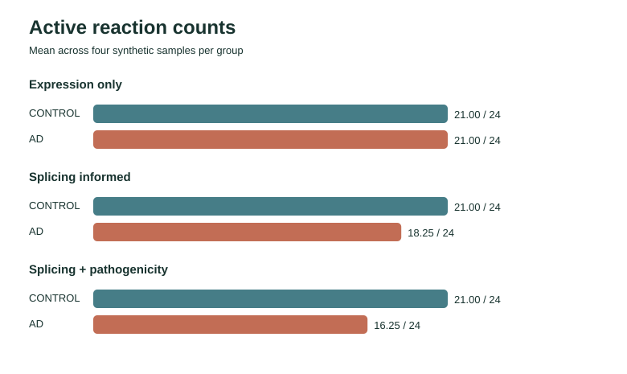
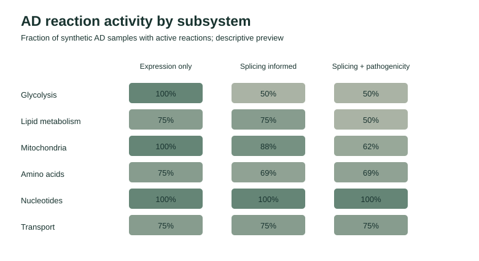
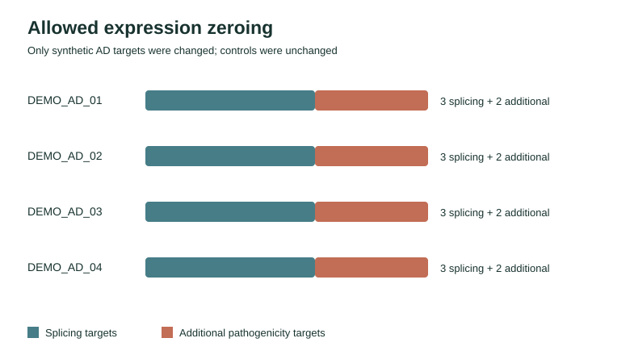

Open-source workflow preview
Splicing and pathogenicity-informed reaction states
This static report lets visitors inspect a small, reproducible input/output example before installing the scientific stack.
Synthetic preview only. These reaction states come from a simple threshold rule over invented values. This preview does not run Human-GEM, COBAMP, TROPPO iMAT, Fisher testing, or reporter-like statistics. It does not support biological or clinical conclusions.
What the preview demonstrates
The same four invented AD and four invented control samples pass through three conditions. Splicing targets are zeroed only in AD samples; genes with synthetic pathogenicity rank strictly greater than 0.95 are additionally zeroed. A target at exactly 0.95 is excluded. Every change is recorded in an audit table.



Generated summary
| Condition | Group | Mean active reactions / 24 |
|---|---|---|
| Expression only | AD | 21.00 |
| Expression only | CONTROL | 21.00 |
| Splicing informed | AD | 18.25 |
| Splicing informed | CONTROL | 21.00 |
| Splicing + pathogenicity | AD | 16.25 |
| Splicing + pathogenicity | CONTROL | 21.00 |
Inspect the data
- Sample metadata and synthetic expression
- Splicing targets and pathogenicity ranks
- Group summary and sample summary
- Expression-only matrix, splicing matrix, and combined matrix
Regenerate this report and every linked file with python3 preview_demo.py. The licensed full Human-GEM workflow is documented separately in the project README.